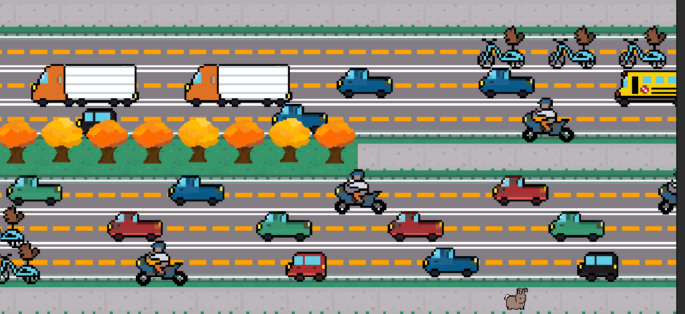

Midway Frogger
Midway Frogger has similar gameplay to Frogger with an emphasis on a cozy and humorous aesthetic. Hop across UChicago's midway to get to class during different school quarters.
I contributed to programming movement, car spawning, and designing most level layouts. This project was coded with Unity using C#.
Through this project, I gained experience analyzing existing gameplay and reverse engineering how to replicate it. Grid-based movement and procedural generation for obstacle spawning were two main technical takeaways.
To play this small browser-based game, go to this link: https://louiser.itch.io/midway-hopper or play in the window above. The code can be viewed on this GitHub page: https://github.com/albanezla08/midway-frogger.

Gameplay example